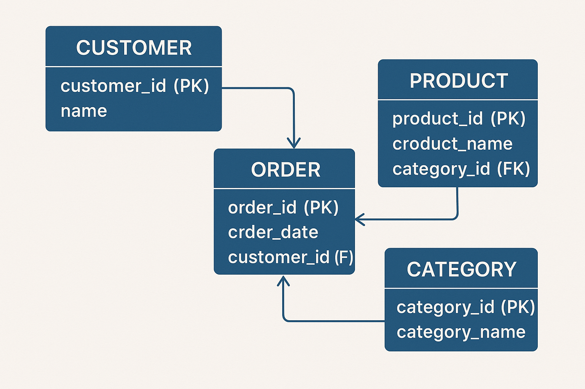

Consultas Básicas
Las consultas básicas en Mysql sirven para manipular datos en las tablas creadas, estas consultas también denomidanas como sentencias SELECT
Haz clic en los botones de abajo
¿Qué es un SGBD? (Sistema de Gestión de Bases de Datos)
Un Sistema de Gestión de Bases de Datos (SGBD) es un conjunto de programas de software especializado que se utiliza para crear, administrar y manipular bases de datos. Este sistema permite definir la estructura de la base de datos (por ejemplo, qué tipo de datos se almacenarán y cómo se relacionarán entre sí), así como ingresar, modificar, consultar o eliminar información de forma controlada.
El SGBD actúa como un intermediario entre los usuarios y la base de datos, asegurando que las operaciones que se realicen sobre los datos sean correctas, seguras y eficientes. Esto significa que el SGBD protege la información frente a errores, accesos no autorizados y pérdidas accidentales.
Además, un buen SGBD garantiza:
integridad de los datos: asegura que los datos almacenados sean correctos y coherentes con las reglas definidas.
seguridad: controla quién puede acceder a la base de datos y qué operaciones puede realizar.
consistencia: asegura que las transacciones (grupos de operaciones) se completen correctamente, o en caso contrario, que no tengan efecto alguno, evitando que la base de datos quede en un estado incorrecto.
disponibilidad y rendimiento: permite que múltiples usuarios accedan a los datos simultáneamente sin afectar negativamente la velocidad de respuesta o el correcto funcionamiento del sistema.
MySQL ofrece una amplia variedad de tipos de datos que permiten almacenar distintos tipos de información, desde números hasta datos espaciales.
A continuación se detallan sus principales categorías:
DECIMAL (o NUMERIC): Precisión exacta. Ideal para valores monetarios o cálculos donde se requiere evitar errores de redondeo.
FLOAT: Precisión aproximada en punto flotante. Más rápido que DECIMAL pero menos preciso.
DOUBLE (o DOUBLE PRECISION): Similar a FLOAT pero con doble precisión.

El modelado de datos es un proceso fundamental en el diseño de sistemas de información,
ya que permite representar de forma visual, lógica y estructurada los datos y las relaciones entre ellos dentro de una organización o sistema.
Su propósito es facilitar la comprensión,
organización y posterior implementación de una base de datos que sea eficiente,
coherente y adaptable a las necesidades reales del negocio o proyecto.

En el contexto del diseño de bases de datos, especialmente cuando se utilizan modelos relacionales,
las relaciones entre tablas permiten vincular datos que están distribuidos en distintas entidades.
Estas relaciones definen cómo interactúan los datos y son fundamentales para mantener la integridad y la eficiencia del sistema.

En MySQL, el diseño de tablas es crucial para organizar y almacenar datos de manera eficiente y estructurada. Las tablas son la base de cualquier base de datos relacional y permiten almacenar información en filas (registros) y columnas (campos). El diseño de tablas implica definir la estructura de cada tabla, incluyendo los tipos de datos de las columnas, las claves primarias y foráneas, y las relaciones entre tablas.

Las consultas básicas en Mysql sirven para manipular datos en las tablas creadas, estas consultas también denomidanas como sentencias SELECT
Referecencias investigativas aquí. Elmasri, R., & Navathe, S. B. (2016). Fundamentals of Database Systems (7th ed.). Pearson. Connolly, T., & Begg, C. (2014). Database Systems: A Practical Approach to Design, Implementation, and Management (6th ed.). Pearson.